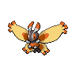

📖 英語版の図鑑説明
Scatters steel-colored scales as it flaps its wings. Despite being observed feeding primarily on the nectar of flowers, Mothim is not often seen around flower gardens.
日本語訳
羽ばたくたびに鋼色の鱗粉を散らします。蜜を好むが花畑ではあまり見られません。
💡 英語名「Mothim」の由来
英語名「Mothim」は、moth（ガ）とhim（彼）を組み合わせた名前と考えられている。フランス語の名前は「Papilord」で、papillon（チョウ）、lord（領主）から作られている。
出典 Bulbapedia
📊 ガーメイルの種族値
HP70
こうげき94
ぼうぎょ50
とくこう94
とくぼう50
すばやさ66
合計 424
❓ よくある質問
- ガーメイルの英語名は？
- ガーメイルの英語名は「Mothim」です。
- ガーメイルの英語名「Mothim」の由来は？
- 英語名「Mothim」は、moth（ガ）とhim（彼）を組み合わせた名前と考えられている。フランス語の名前は「Papilord」で、papillon（チョウ）、lord（領主）から作られている。
- ガーメイルは英語版の図鑑でどう説明されている？
- 「Scatters steel-colored scales as it flaps its wings. Despite being observed feeding primarily on the nectar of flowers, Mothim is not often seen around flower gardens.」と書かれています。日本語にすると「羽ばたくたびに鋼色の鱗粉を散らします。蜜を好むが花畑ではあまり見られません。」という意味です。
ガーメイルは第4世代（シンオウ地方）のポケモンです。第4世代（シンオウ地方）の英語名一覧 →